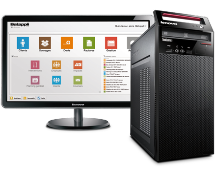
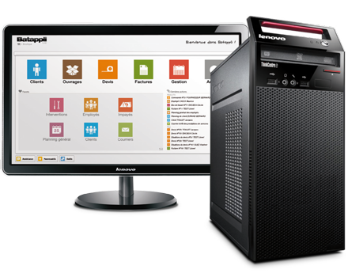

Dear Joey, My Child Wants a Computer For Christmas. Should I Get One?
From: 5a1ntN1ck25
Dear Joey, My child wants a computer for Christmas. Should I get one?
Dear 5a1nt N1ck,
I think It's perfectly logical for you to have concerns, but you shouldn't worry about your child. I would say the only reason one shouldn't get their child a computer is for a financial reason. A good computer can be quite expensive, but if you have the funds, it is a worthwhile investment not only for your child's current tasks, but for your child's Future. 
I think It's perfectly logical for you to have concerns, but you shouldn't worry about your child. I would say the only reason one shouldn't get their child a computer is for a financial reason. A good computer can be quite expensive, but if you have the funds, it is a worthwhile investment not only for your child's current tasks, but for your child's Future. 
Computers, even if they are provided through the school are a wondrous
learning tool for students. It allows them to explore their own creativity and do their school
work more efficiently. Unfortunately, some schools feel the need to block specific websites
that would be used by students for positive reasons. I have personally run into this problem
with some programming and website hosting sites that the school blocked. At home with their own
computer, students can use these websites.
Christmas is a large time for spending money, and a computer has
the potential to be equivalent to the normal price you pay for everything. I would
suggest that you tell your child that, if they get a computer for Christmas, that
it may be the only gift, or that they may not get as many as normal. Christmas is a
time for giving, but not for going broke. We all need to remember the true holiday
spirit of being together over getting presents. A computer is a wonderful useful gift,
but it means nothing without friends and family.